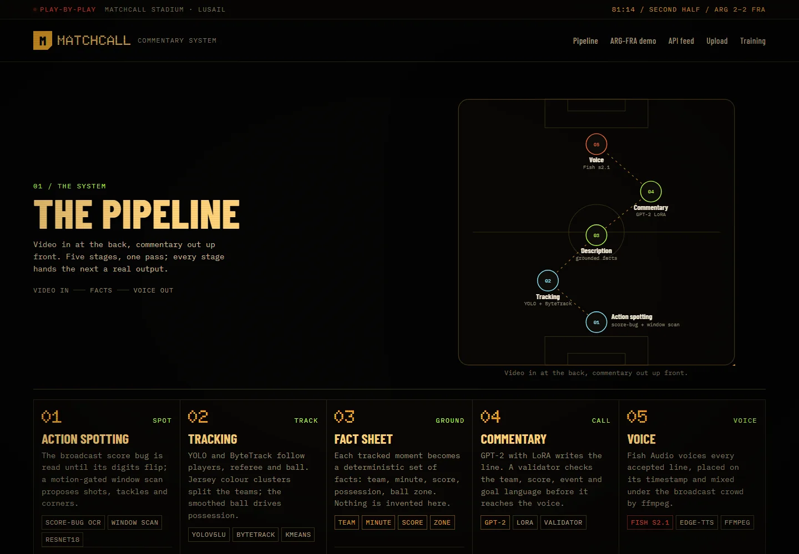

GIG-01 THREAT 5/5SPORT // COMPUTER VISIONREWARD: LIVE
MATCHCALL
Commentary that can only say what it can prove.
Drop in a broadcast clip. It spots the action, tracks players, builds a deterministic fact sheet, then writes and voices grounded commentary — or cuts a highlights reel per moment.